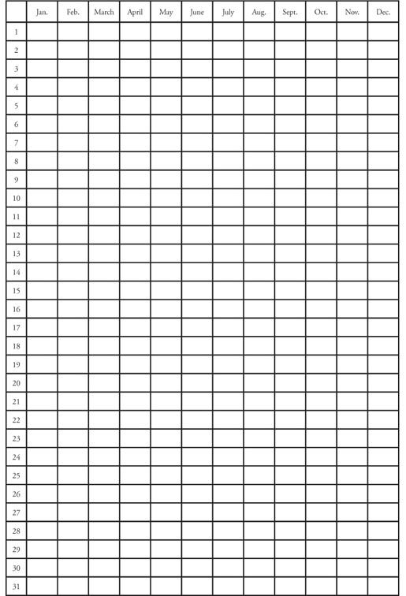
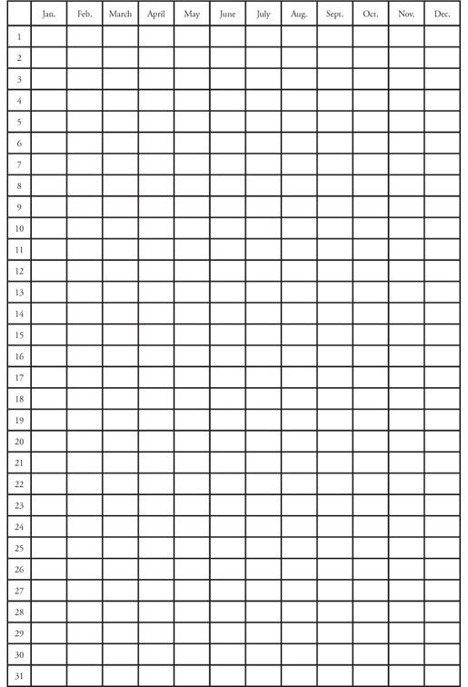
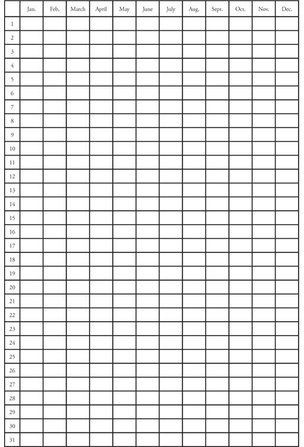
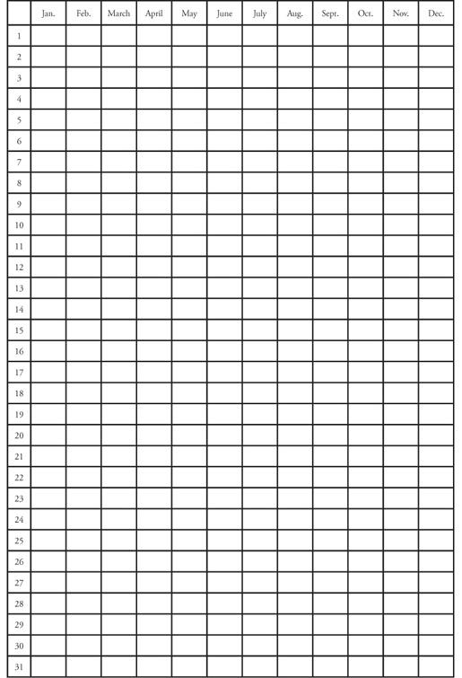
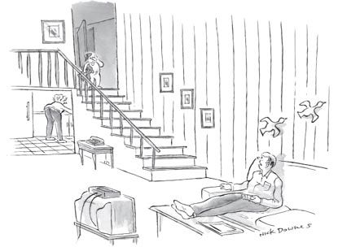

There are four major ways in which the emotionally neglected tend to fall down when it comes to taking care of themselves and their own needs, and for good reason. Adults who were emotionally neglected as children often don’t know what their needs are. Their own wants, needs, and feelings are not only irrelevant to the emotionally neglected, they’re invisible. The four major areas we’ll talk about here are:
Part 1. Learning to Nurture Yourself
Part 2. Improving Self-Discipline
Part 4. Having Compassion for Yourself
All four of these skills tend to come naturally to people who received enough nurturance and discipline from their parents during childhood. If your parents had enough compassion and empathy for what you were feeling as a child, you will have the same for yourself as an adult. If your parents had enough closeness, caring and acceptance in their relationship with you as a child, you will most likely have a good capacity for intimate relationships as an adult.
When you grow up emotionally neglected, these abilities which seem to come somewhat naturally to others become skills which you have to develop in adulthood. Developing a skill takes work. It requires time and conscious effort. In this chapter, we’ll talk about what these skills are, what they mean and how to cultivate them for yourself. At first each skill may feel foreign and clumsy as you try it. The key is to keep at it, no matter how it feels. This is one of the few times that I will tell you to ignore your feelings! All skill development requires persistence, and I promise you that persistence will pay off.
As you read about the skills in this chapter, you’ll see that I’ve devised a special tracking sheet, called a Change Sheet for all but one. In working on these skills and using the Change Sheets, please be aware that if you try to work on all of the skills at once, it could be overwhelming. I recommend that you master them one skill at a time, and preferably in the order I’ve presented them here. At most, try to take on two at once. Don’t start on another one until you’ve mastered the one before it. And if one of them doesn’t seem to apply to you, then by all means skip it and go on to one that does seem fitting. Be sure to pace yourself, as it’s better to put all your effort into one skill than to spread yourself too thinly over multiple ones.
All of the skills we’ll be talking about in this chapter are challenging to master. Many, many people spend years of their lives trying to gain control over them. It’s important to give yourself plenty of time, understanding and care as you use the Change Sheets. Take pride in your accomplishments. When you get off-track, don’t be angry at yourself; just get yourself back on.
Most likely, you will need some help as you go through this chapter using the Change Sheets. Throughout the process, please use my website, www.drjonicewebb.com, as needed for ongoing support, tips and assistance.
You may be wondering exactly what this means. The word nurturance could have a number of different meanings. Here, I am talking about self-nurturance as taking the steps that are necessary to help yourself have a healthy, enjoyable life. If you are healthy and enjoying life, it will open you up to have a positive impact on the people around you. Your health and happiness will have a ripple effect that will spread to your spouse, children and friends and continue outward. As an emotionally neglected person, you may already be an excellent caretaker of others. Now it’s time for you to start paying attention to your own needs and taking care of yourself. There are four steps to learning to nurture yourself. They are:
Step A: Putting yourself first
Step B: Eating
Step C: Exercise
Step D: Rest and relaxation.
Let’s start with putting yourself first. What? Did I hear you say that’s selfish? It is not! When you are healthy and strong, you’re freed up to give to others in a richer, deeper, healthier and stronger way. I like to think of it this way: during the flight safety announcements that we rarely listen to, the flight attendant cautions that if oxygen masks drop in front of each seat, adults should secure their own mask before helping others. This request makes perfect sense. You will not be effective in putting on your child’s mask when you are struggling to breathe yourself. This rule applies to life in general. Once you’re secure and solid yourself, you can help others much more effectively.
When you first start to work on putting yourself first, you may encounter resistance. Surprisingly, it will be primarily from the people closest to you. Think about it this way: all of the people who know you best expect you to behave a certain way. For example, they know you will say yes when they ask you a favor. The first time you say no they’ll be taken by surprise. They may feel miffed, and they may convey that to you in some way. Please keep in mind that this is the normal process of change. Change doesn’t come easily to the changer herself or to her loved ones, even when it’s a healthy and positive change. Sometimes it helps to explain to the people closest to you that you’re working on better self-care and that you may be doing some things differently from now on. It may be an adjustment, but anyone who truly cares about you will eventually adjust with you, and will probably even come to respect you for it.
To learn how to better put yourself first, it may help to have some guidelines, which I’ve listed below. As you work on building this skill, you may find some of the guidelines easier to follow than others. As you read them, be sure to think about which ones you may need the most help with. I’ve included a Change Sheet to help you to work on each one separately.
Learn to say no. No doubt, the people in your life know you pretty well. They know that you will be there for them, because that’s what emotionally neglected people do. Your copious amount of compassion for others makes you feel obligated to say yes to requests from your friends, family, children, boss. Of course, there is nothing wrong with saying yes. It’s essential for positive relationships and progress in life. The problem comes when you feel that unless you have a really good excuse to say no to a request, you must say yes. As a result, you may end up sacrificing yourself too much by saying yes to things that you don’t actually have the time or energy for. It’s very important to free yourself from this quandary so that you can make decisions that are best for yourself, while also taking others’ needs into consideration.
A primary rule of assertiveness is that anyone has the right to ask you for anything; and you have the equal right to say no, without giving a reason. If everyone operated this way, feeling free to ask for help when needed and feeling free to say no when desired, the world would be a better place. Boundaries would be clearer, and there would be a lot less unnecessary, useless guilt floating around. If you feel guilty saying no, or if you find yourself saying yes to things because you’re uncomfortable saying no, please get a good book on assertiveness (there are many available; see the Resources page in the back of this book for my recommendation) and start trying to overcome it. Saying no when you need to, free of guilt and discomfort, is a vital building block of self-care.
Reading a book on assertiveness will help you understand and embrace the concept so that hopefully you can change your own philosophy. But after you change your philosophy, you must follow that up by changing your behavior. Use the “Saying No” Change Sheet on the next page to track on a daily basis the number of times you say no to requests that are overly-demanding of you.
*Record number of times you say ‘no’ per day
As I’ve said before in this book, the more you do something that’s foreign, the less foreign it becomes. Gradually, over time it will become a normal process and seem to happen on its own with little effort on your part. The point of this Change Sheet is not necessarily to increase the quantities, since each day will offer a different number of situations in which it’s actually appropriate to say no. It’s meant more to help you keep overall track of the changes in your behavior. It will also help remind you every day to work on it. It’s harder to forget that you’re working on saying no when you know that you’ll have to record it that evening.
Ask for help. Asking for help addresses the counter-dependence that can be so ingrained in the emotionally neglected person. Remember David, our example of counter-dependence in Chapter 3? David had internalized his parents’ message, “Don’t have feelings, don’t show feelings, don’t need anything from anyone, ever,” and he was living his adult life according to it. When you’ve spent your entire life unaware that relying on others is not only an option but a necessity, it’s very hard to see it any other way.
There’s another aspect of asking for help that’s difficult for the emotionally neglected to deal with. If it’s hard for you to say no, chances are it’s hard for you to ask for help as well. Assertiveness works both ways. Emotionally neglected people often live their lives trapped in a Catch-22. Since you feel that you must say yes when someone asks you for a favor or help, or even extends a social invitation, you naturally assume that others feel the same way. Since you don’t want to put others in that bind, you don’t feel comfortable asking them for a favor or help. In a world where, in your head, nobody can say no to anyone, you are going to lose. These ways of thinking make you available to help others but unable to ask others for help when you need it. Can you see that this is a no-win system for you?
To free yourself from this difficult bind, all you have to do is accept that other people don’t feel guilty or uncomfortable saying no. Other people have an intrinsic understanding of this rule of assertiveness. The huge majority of people have little angst about asking for help and little angst about saying no. As soon as you can join them, a new world will open up for you.
Use the following “Asking for Help” Change Sheet to track and make yourself aware of your efforts to ask for help more often.
“Asking For Help” Change Sheet
*Record number of times you ask for help per day

Discover your likes and dislikes. When you were growing up, perhaps your preferences were not considered often. Questions like “What do you feel like doing today?” “Would you rather go to a pizza restaurant or a hamburger place?” “Do you want to buy this shirt in green or pink?” “How do you feel about that?” Emotionally neglected adults can have great difficulty knowing themselves. Remember Josh from Chapter 3, with the unrealistic self-appraisal? Josh had received so few questions like this in his childhood that he had no idea as a college student what he was interested in, what he liked, or what would be a fitting college major. Depending on the amount and types of interest your parents showed you growing up, you may have certain areas where you know yourself well, and certain areas in which you’re mystified. Here are some questions to help you figure out where you’re lacking in knowing your likes and dislikes:
I could go on and on with these questions, but let’s stop here. If you can easily answer most of them, good for you. If you struggled through, it’s definitely an indication that you’ve been focused outward for much of your life (as you were trained to do in your childhood) and have not been tuned in to yourself. An important part of caring for yourself is knowing what you like. Knowing what you like will help you define what you want. Then when your spouse or friend says to you, “Where should we go for dinner, Italian or Greek?” you’ll have an answer for him or her. In sharing your answer, whether the other person agrees or not, you are taking an important step in taking care of yourself.
Use the following “Likes and Dislikes” Change Sheet to write down everything you can think of that can be categorized as a like or a dislike. It may include places, colors, foods, activities, furniture styles, people, people’s actions, or your own moods, for example. Anything at all that you can categorize, write it down on the sheet. Then, as you go forward, day by day, write down things as they occur to you. Tracking and writing down your likes and dislikes as you discover them will help you not only be aware of your own feelings about things, it will also help you own those feelings. There’s no right or wrong to your likes and dislikes. They simply are what they are, and they are valid and important.
“Likes and Dislikes” Change Sheet
Likes |
Dislikes |
|
|
Put a higher priority on your own enjoyment: When you were growing up emotionally neglected, you probably didn’t have great latitude to make choices to bring yourself enjoyment. Quite possibly other people’s wishes came before your own. Or, if your family was scrambling for resources, there wasn’t much left for fun things. If you grew up with any type of emotionally neglectful parents, chances are you place far too little value on your own experience of pleasure and fun as an adult. To change this there’s only one option, and it involves putting yourself first.
In some ways, this last guideline encapsulates the first three. In order to put a higher priority on your own enjoyment, you have to say no to requests that pull you too far away from it. You have to ask for help sometimes so that you feel enough support and connection to others to be available to the opportunities that are out there. And you need to know what you like so that you can seek it.
Again, you may be wondering, “If I put myself first in order to seek enjoyment, won’t that make me selfish?”. Keep in mind that everyone needs and deserves enjoyment. You deserve it as much as anyone else does. Sometimes you’ll have to say no to one person in order to free yourself up to have fun with another. This is not about selfishness, it’s about balance, balance between giving and receiving; balance between self and others. Don’t be afraid of making decisions that put your fun on a higher priority. The emotionally neglected are at far smaller risk of becoming selfish than are most people. As someone who has been trained to put your own needs, wishes and desires to the side, you have an extremely far distance to go before you could become selfish.
When putting your own pleasure last is so deeply ingrained, making a decision to change it will not be enough. That decision is an important first step, but it must be followed up with action. Can you see where this is going? It’s another Change Sheet, “Prioritizing Enjoyment.” You’ll find it on the next page to help you track and stay aware of your need to work on making different choices. If you keep working at it, over a period of time, it will start to feel less foreign. Your brain will start making the choices on its own, and it will become second nature for you. At some point along the way, you may be surprised to find that life is starting to feel less mundane and tedious.
“Prioritizing Enjoyment” Change Sheet
*Record number of times you prioritize your own enjoyment per day

It’s good that you’re working on putting yourself first! Because you will need to be better at that in order to make progress on eating, exercise, and rest/relaxation. These all address the physical part of nurturing yourself. They’re all about what you put into your body and how you expend your energy.
Not all emotionally neglectful parents neglect their children in this area. But as we’ve talked about before, it’s possible for parents to provide their children with plenty of food and still manage to emotionally neglect them in the area of eating. It is a parent’s responsibility to help his child develop a healthy relationship with food. Many parents who are not emotionally neglectful fail to do this with their child simply because they don’t have a healthy relationship with food themselves. They are unable to teach what they do not know. But emotionally neglectful parents fail in the eating area for the same reasons they fail their children in other areas.
Before we talk more about eating, please answer the questions below about your adult eating habits.
1. If you have a spouse or children of your own now, do you often sit down and have meals together?
2. Do you pay attention to nutrition and try to make sure that you eat a balanced diet?
3. Do you keep too much junk food in the house?
4. Do you eat more junk food than you should?
5. Do you still have a preference for “kid food,” like hotdogs, chicken nuggets or pizza?
6. Do you make sure to have plenty of vegetables and fruits, i.e., some with every meal?
7. Are you a good cook?
8. Are there times when there is literally no food in the house for a meal?
9. Do you eat a lot of frozen or pre-packaged prepared food?
10. Do you sometimes forget to eat?
11. Do you tend to overeat?
Do not read on until you’ve answered each of the above questions yes or no. Once you’re finished with those questions, please move on to answer the questions below about your childhood eating experiences.
1. When you were growing up, did your family sit down and eat meals together often?
2. When you were growing up, were your parents careful about making sure you got a balanced diet?
3. When you were growing up, was there a lot of junk food, such as chips, cookies, ice cream, candy, or sweets in the house?
4. If so, did your parents closely supervise how much of the junk food you ate and when you ate it?
5. Were you raised on hotdogs, chicken nuggets and pizza?
6. Did you usually have a vegetable or fruit with every meal?
7. Was at least one of your parents a good cook?
8. Were there times when there was literally no food in the house for a meal?
9. Did your family eat a lot of frozen or pre-packaged prepared food?
10. Did you skip meals as a kid?
11. Did you tend to overeat as a kid?
You probably noticed that some of the questions in the adult section match up directly with the questions in the childhood section. Go back and check your answers. What we’re looking for here is the extent to which your adult eating habits match up with your childhood eating experiences. Consider childhood as the programming phase of your life. Most of us in adulthood tend to follow the programs that we were set up with as a child. For an example of this, think back to third-grade Zeke, whose Permissive mom threw him a football and offered him ice-cream to help him feel better about the note from his teacher. Any parent might use food to help a kid feel better here and there. But if Zeke’s mother uses this often, or even just at the wrong times, she’ll inadvertently teach him to use food to manage his emotions. In adulthood, he may have a tendency to continue this. This could cause him to eat the wrong things for the wrong reasons, none of which is healthy.
Most people as adults greatly underestimate the extent to which they are influenced by their parents’ programming of them as children. As adults, we experience ourselves as making free choices, our own decisions. The reality is, the program we were set up with by our parents in childhood is incredibly powerful. While it’s not easy to override these programs, it certainly can be done. You’ve probably found that some of your childhood answers from the eating questions don’t match the adult ones. These are the programs from your childhood which either you have overcome on your own, or have been altered by other life experiences.
As an emotionally neglected person, there may be some aspects of eating which your parents didn’t teach you at all. In these areas you had no choice but to fill in for your parents and program yourself. To illustrate this, let’s go back to Noelle from the ‘Little Compassion for Self’ section in Chapter 2. Noelle microwaved herself a frozen chicken sandwich every morning for breakfast all through middle and high school. Since no parents were attending to her need for fresh, healthy food, Noelle was forced to figure out something for herself. Her childish solution became her program. This program continued to run when I met Noelle; as an adult, she and her husband and children subsisted almost solely on a combination of frozen food and take-out. This illustrates the way in which the emotionally neglected child’s self-program is just as persistent and powerful as the one that comes from his parents.
By answering the childhood and adult eating questions were you able to identify some areas in your relationship to food that are not healthy? Have you been struggling to change those habits already? If so, that’s understandable. Our childhood programs are not at all easy to change. By the time we reach adulthood they’ve become more than just habits, they’ve become ways of life. Changing a way of life is difficult but it is certainly possible. It just takes work. I hope that realizing how your problem eating areas are rooted in your Emotional Neglect will stop you from self-blame and decrease your frustration. It’s important not to waste your energy on any of that, and to instead put your energy into having compassion for yourself and making changes.
To override your unhealthy programming, you’ll need to use many of the Emotion skills you learned in Chapter 6, and many of the Self-Care skills you’ve already learned in this chapter. Be aware of your feelings, accept them and share them with others. This will help you avoid eating for emotional reasons. Say no when you need to. Ask for help, and use the help you get. Prioritize your enjoyment so that you won’t rely upon food excessively for reward and pleasure. And use the “Eating” Change Sheet to change the aspects of your eating that you identified as problems in this section. And again, a reminder to be careful to avoid trying to change too many habits at once.
*Record the number of times each day that you override an unhealthy habit

Despite the clear and consistent research findings showing that physical exercise is a primary aspect of improved health, the majority of Americans are not doing it. According to the Centers for Disease Control and Prevention in Atlanta, only 35% of adults engage in regular leisure time physical activity (2009). There are all sorts of reasons why people do not act upon the best advice of doctors and health researchers. It helps greatly to have these three basic building blocks for a lifetime of healthy exercise habits: you realize and understand the value and importance of exercise; you have found a form of exercise that’s enjoyable to you; you are good with self-discipline.
Now that you understand more about Emotional Neglect and about the programming that takes place in childhood, you can see how the emotionally neglected might have extra challenges in any or all of those three areas.
Depending upon your age, you may or may not have had the opportunity to learn about the value of exercise. It’s certainly possible that your parents didn’t know this themselves because much of the research has been conducted in the last twenty years or so. Generally anyone over 30 years old may have learned about the health benefits of exercise themselves rather than from their parents. Not having been taught the importance of exercise is not in itself a sign of Emotional Neglect. But if you don’t realize its importance, you’re unlikely to make it happen.
If you were not emotionally neglected in this area, you stand a much better chance of having enjoyed in childhood a sport or physical activity that you might carry over into adulthood. For example, if your family went on weekend trips skiing or hiking, or if your family supported you in playing and enjoying a sport like baseball, football or tennis, you’re more likely to have grown up appreciating the enjoyment that can come from physical exercise. When you find exercise enjoyable, it’s much easier to prioritize it as an adult.
Self-discipline is probably one of the largest hurdles that gets in the way of emotionally neglected people’s exercise habits. In Chapter 3 we talked about William, whose single mother gave him an unstructured childhood by not making him do things that he didn’t want to do. When you grow up with discipline that’s either too harsh or too lax, you do not get the opportunity to internalize the ability to discipline yourself in a healthy way. You don’t learn how to make yourself do things that you don’t want to do, in this case, exercise. As you read on to the next section in this chapter you’ll learn much more about self-discipline.
To evaluate your standing in these three areas of physical exercise, let’s start by answering some questions about your adult life:
Don’t move on until you’ve answered yes or no to each of the seven questions above. Once you’ve answered all of the questions, please move on to answer the questions about your childhood below:
Since you’ve already been through this in the section on eating, it will be easier for you to see the meaning of the correspondence between your answers in the childhood and adult sections. If you see from your answers that you’re active enough and have no problems in this area, then congratulations, you are one of the 35%. Perhaps this is one of the ways in which your parents came through for you, or perhaps you’ve managed to set up your own healthy habits for yourself. Either way, you’re in good shape.
If you’ve been able to identify some specific aspects of exercise that you need to work on, be sure to read Self-Care Part 2, Improving Self-Discipline. Also use the “Exercise” Change Sheet to work on changing your behaviors so that you can nurture yourself in this way too.
*Put a checkmark on the days that you exercise

So now that we’ve talked about Putting Yourself First, Eating, and Exercise, it’s vitally important to pay attention to your ability to Relax. I have found that most emotionally neglected people fall into one of two categories: they either rest and relax too little, or they rest and relax too much. Some switch back and forth from one to the other with little balance. Let’s take a moment to look at how Emotional Neglect can cause this sort of imbalance.
A parent who’s in tune with her child can tell when her child is hungry and makes sure to the best of her ability that her child eats. Such a parent also sees when her child is tired, and makes sure to the best of her ability that the child gets some rest, whether the child wants to rest or not. Furthermore, an aware and observant parent does not make her child rest when it’s convenient for the parent; she makes the child rest either on a regular schedule, which teaches the child to routinely and consistently take care of himself; or she makes the child rest when it’s clear that the child needs it. This teaches the child how to read his own signs of tiredness and how to make himself rest when he needs it. Through this process of parental observation and emotional attunement followed up by action, a child has the opportunity to internalize all of these skills for himself. As an adult, he will be in tune with his own body. He will know his own signs of tiredness, whether they be crankiness, quietness, silliness, fogginess or something else, and when he observes them in himself, something will click in his head that says, “OK, you need some R & R.” And then he’ll do his best to see that he gets some rest, whether he wants to rest or not, just as his parent did for him in childhood. Notice that a part of this scenario is that he may have to make himself do something he doesn’t want to do, which is a separate but related skill.
All children can be lazy sometimes. It’s an attuned parent’s job to notice when a kid is going overboard with this and push the child to engage in activity whether the child wants to or not. A six-year-old shouldn’t be allowed to watch TV for hours, nor should a teen be allowed to lay in bed all day listening to her iPod. Neither of these is good for the child. Parents who allow this too much are probably doing it for their own benefit. Out of sight, out of mind. If the child isn’t underfoot or causing a problem, the parent can be freed up. Of course no parent is perfect at this; it all boils down to whether he does it well enough. If the parent does not do it well enough, the child may, as an adult, have difficulty forcing herself to get up whether she wants to or not.
Let’s take, for example, the Narcissistic and Sociopathic Parent Types. These parents, as talked about in Chapter 2, have a tendency to put their own needs above those of the child. In these situations the parent makes the child rest at a particular time because the parent is tired and needs a break. Or the converse, the parent doesn’t allow the child time to rest when the child needs it because it’s not convenient for the parent. An Authoritarian Parent might misread a child’s tiredness as disrespect, i.e., lack of love and be offended or hurt by it; Divorced/Widowed, Addicted, Depressed, Workaholic, Caretaker of Ill Family Member, and Well-Meaning all might allow the child to languish or exhaust themselves out of pure obliviousness; Permissive simply avoids conflict so doesn’t get involved to this level in the child’s needs. Achievement Parents may place their need for the child to study or practice the violin over any honest physical need that the child shows.
In all these cases, the child is not getting what she needs. She is not learning her own physical cues; she’s not getting the message that rest is important when she’s tired or that too much rest is bad for her. And she’s not learning how to override her own impulses, which is a vital part of self-discipline.
As an emotionally neglected person, it’s important for you to determine where your parents may have failed you, well-meaning or otherwise, and correct it for yourself. Are you someone who can over-indulge in rest? Do you not rest enough? Do you bounce back-and-forth between those two extremes? If so, please use the “R&R” Change Sheet to start learning to attend to and regulate your needs for rest. Also, read on to the next section on Self-Discipline, as it’s an important part of being able to self-regulate.
“Rest & Relaxation” Change Sheet
*Put a checkmark on the days that you rest & relax
No doubt you have noticed the term “self-discipline” sprinkled throughout this book. That is because it is a very common issue among the emotionally neglected. Although there are a number of possible underlying causes of self-discipline struggles, like depression or attention deficit disorder (ADD), I often have found it to be Emotional Neglect. Many people who were emotionally neglected freely describe themselves as procrastinators. Some call themselves lazy. Common are battles with over- and under-eating, excessive spending, or over-drinking. As mentioned above, many emotionally neglected people also have difficulty forcing themselves to exercise, do menial tasks or do anything that’s not immediately fun or rewarding.
This may sound like a big list of unrelated items. Actually, they all boil down to the same thing: making yourself do things you don’t want to do and stopping yourself from doing things you shouldn’t do. This is one of the classic dilemmas of the emotionally neglected.
After reading about William’s struggle with Self-Discipline in Chapter 3, and the Eating, Exercise and Rest & Relaxation sections of this chapter, you probably have a general sense of why this is. Human beings are not born with an innate ability to regulate and control themselves. These are both vital skills which lucky people learn in their childhood. Here’s how:
When your mother calls you in from playing with your neighborhood friends because it’s dinnertime or bedtime, she is teaching you this important skill. She’s teaching you that some things must be done, even if you don’t feel like it. When your dad gives you the weekly chore of cutting the grass and then follows up in a loving but firm way to make sure you do it, he’s teaching you how to make yourself do what you don’t want to do and he’s teaching you the rewards of that. When your parents make sure you brush your teeth twice a day, when they say no to dessert, when they set aside and enforce “homework hour” every day after school because you’ve been slacking on homework, when they continue to love you but set your curfew earlier as a consequence of thoughtlessly breaking it; all of these parental actions and responses are internalized by you, the child. You not only internalize the ability to make yourself do things and to stop yourself from doing things, you internalize your parental voices, which later in adulthood become your own.
The internalized parental voice is extremely important, and it can often go awry in Emotional Neglect. Let’s take the example of William from our Self-Discipline section of Chapter 3. William’s busy single mother loved him dearly. She let him run relatively free throughout his childhood with little responsibility at home and low accountability at school. William was an intelligent, likeable, even charming boy, and everyone wanted the best for him. His teachers cut him slack because they could see that he was bright and capable. William would later report a fun, free childhood and be perplexed by his adult struggles with being productive and confident. His wife was confused by his difficulty regulating his eating, sleeping and work hours. She was puzzled by his erratic tendencies, such as working into the wee hours of the morning, sleeping a few hours, skipping meals, then going to bed at 7 p.m. the next night. But William’s productivity suffered not just because of his erratic schedule. It also was compromised by a harsh voice in his head when he was working which frequently told him that what he produced wasn’t good enough, wasn’t done quickly enough or would be a disappointment to his boss. William spent so much time and energy battling this harsh, critical voice in his head that he had little left over to produce much of anything.
You may be wondering where William got this harsh inner voice. After all, his mother was not harsh with him. She didn’t judge him or give him negative feedback or expect too much from him. The problem was that in the absence of a parental voice, William had to make up his own. He not only had a shortage of skills for structuring himself so that he could be productive, he had no idea what he could expect of himself or how to judge the quality of his productions. The voice he invented for himself was not a balanced, moderate and loving adult voice. His inner voice went back and forth between harsh judgments and complete indulgences. This is why his wife was puzzled by his erratic sleep hours, eating habits and work schedule.
William’s inner self-regulating voice was erratic, both harsh and indulgent. Some emotionally neglected people’s self-created voices are more predictable, meaning they are only one or the other. Still other emotionally neglected people actually manage to figure out self-regulation for themselves, and create a voice for themselves that’s mature, measured, caring and firm. If you are in this last category, you can give yourself all the credit for a job well done. If you’re in one of those previous categories, do not despair. You can change your self-discipline voice. As an adult, you can re-parent yourself in this area by basically rewiring your own brain. You can do it by using a simple but effective rewiring program I call The Three Things Program.
In this skill-building exercise, you will be wiring your brain with the hardware that’s essential to have in order to be able to make yourself do what you don’t want to do and vice-versa. It works like this: Every day, you must do Three Things that you don’t want to do or stop yourself from doing Three Things you want to do but shouldn’t. Every day, you record the Three Things on your, you guessed it, “Self-Discipline” Change Sheet.
“Self-Discipline” Change Sheet
*Record your ‘Three Things’ each day
SUN |
Morning |
|
Afternoon |
|
|
Evening |
|
|
MON |
Morning |
|
Afternoon |
|
|
Evening |
|
|
TUE |
Morning |
|
Afternoon |
|
|
Evening |
|
|
WED |
Morning |
|
Afternoon |
|
|
Evening |
|
|
THU |
Morning |
|
Afternoon |
|
|
Evening |
|
|
FRI |
Morning |
|
Afternoon |
|
|
Evening |
|
|
SAT |
Morning |
|
Afternoon |
|
|
Evening |
|
To help you get a feel for this, I’ll give you some examples of Three Things that my patients have done and shared with me. They are: face-washing, bill-paying, exercise, floor-sweeping, shoe-tying, phone-calling, dishwashing and task-starting. On the “things you stop yourself from doing” side: not eating a piece of chocolate devil’s food cake, not buying a pretty necklace online, not having that one more drink when out with friends, and not skipping class. Keep in mind that the point here is not to deprive yourself of enjoyment. If chocolate cake isn’t a problem for you, then that may not be the impulse to override. Try to choose urges that are negative for you in some way.
As you can see, it doesn’t matter how big or small the Thing is. It’s not the Thing that’s done or not done that really matters in this exercise. It’s the action of overriding your default setting. It’s a bit like the George Costanza Experiment in that you’re forging new neural pathways in your brain by forcing yourself to do something that’s not supported by the current neural connections. Try to do this program regularly. If you slip, start right back up again without being too self-critical and without being too self-indulgent by letting yourself off the hook. If you keep at it, you’ll notice that it will become easier and easier for you to self-regulate, manage your impulses and complete unrewarding but necessary tasks. It will build and grow and eventually become an active, hard-wired part of who you are.
No matter how good you get at the IAAA Rules (Identify, Accept, Attribute, Act) for managing your emotions, you will undoubtedly have times in your life when you will be emotionally uncomfortable. As you know from having lived thus far, life hands us all kinds of experiences. And in response to those experiences, we have all kinds of emotions, some wonderful, some neutral, and some unpleasant. IAAA will certainly help at those times. But what do you do when the feeling is persistent or difficult to manage? This is where self-soothing comes in.
As an emotionally neglected person, chances are good that you haven’t put much thought into the concept of self-soothing. Self-soothing is another life skill that non-neglected children learn from their parents. When a father rubs his fitful son’s back to help him fall asleep after a nightmare, when a mother holds her crying child and smooths his forehead, when a father listens carefully to his daughter’s long story about something unfair that happened to her at school that day, when a mother sits with calm quiet empathy through her son’s tantrum, these emotionally present parents are teaching this vital life skill to their children. Children whose emotions are accepted, tolerated and appropriately soothed internalize their parents’ ability to do so. Children absorb the self-soothing skill like the little sponges that they are, and it’s a skill that they’ll need to have throughout their entire lives.
You probably didn’t grow up completely devoid of all soothing from your parents. Again it comes down to whether you received enough. Many emotionally neglected people as adults are improvising in this area.

“A story? Honey, wouldn’t you rather a mild sedative?”
Just as no two people are exactly the same, no two people are soothed the exact same way. Everyone’s needs are different. Throughout my career as a psychologist, I’ve helped people identify a seemingly infinite number of different self-soothing techniques.
The worst time to try to figure out what works for you is when you need it the most. It will work very much to your advantage to identify good possible strategies and have them ready to try when you do need them. It’s likely that a self-soothing strategy that works in one situation may not work in another and vice-versa, so it’s good to have not just one strategy but a list of them. That way, in your moment of need, you can try one and if that doesn’t work, try another.
In order to identify effective soothers, it may help to think back to your childhood. Were there things that you found comforting as a child? Also, think back to the most emotionally challenging times of your adulthood. Have there been helpful self-soothing strategies that you’ve used in the past without realizing it? One warning is to be careful what types of strategies you use. Make sure they’re healthy for you. Alcohol, shopping and eating can help in moderation but if they’re over-used they can make your problem bigger later. Or they can end up giving you another problem to deal with.
Below are some examples of healthy self-soothing strategies that have been identified and used effectively by others. Try these and/or use them as a starting point to help identify what works for you and make your own list.
“It’s only a feeling, and feelings don’t last forever”
“You know you’re a good person”
“You know you meant well”
“You tried your best, and it didn’t work out”
“Just wait it out”
“This will pass”
“I need to figure out what I can learn from this, and then put it behind me”
The possibilities are endless, and must be determined by the situation and by what you’re feeling. This self-soothing strategy works for most people. It is definitely worth adding to your repertoire.
Use the “Self-Soothing” Change Sheet on the next page to make your list. Be sure to keep your list flexible. Scratch off ones that stop working for you and add new ones as needed. Make self-soothing a meaningful, purposeful endeavor that grows and changes with you. All of your life you will need to have the ability to soothe yourself. As you get better at it, you’ll find yourself a calmer person who feels more in control and more comfortable overall.
Self-Soothing List |
|
1. |
|
2. |
|
3. |
|
4. |
|
5. |
|
6. |
|
7. |
|
8. |
|
9. |
|
10. |
|
You may be either disappointed or relieved to learn that there will be no Change Sheet to help you build your self-compassion. That’s because this aspect of self-care is actually more of a feeling and a philosophy than a skill. It will be much more difficult to build it by changing your behavior, or in other words from the outside in. It is best developed from the inside out.
That said, I did save self-compassion for last for a reason. It’s a higher-order aspect of self-care. If all of the components of self-care were put into pyramid form, self-compassion would be at the top. It rests upon all of the self-care skills you’ve been working on above. It requires a level of self-love and kindness that can only come when you care enough to treat yourself well.
Why is self-compassion so important? If you have a lack of compassion for yourself, you’re more likely to castigate yourself with a ruthless internal voice for your own honest mistakes and errors, like Noelle and William did in Chapter 3. You may go so far as blaming yourself and being angry with yourself for having normal feelings and issues, like Laura in Chapter 3, or you could even end up feeling worthless and empty to the point of considering suicide, like Robyn in Chapter 4.
No matter how you slice it, judging, blaming, disliking, insulting and wanting to kill yourself are all the opposites of self-care. Chances are you wouldn’t treat anyone else this way, so why do you treat yourself this way? All of these are self-destructive and will exhaust your energy reserves and take you nowhere but down.
Remember that compassion, along with empathy, is one of the highest forms of human emotion. It’s healing, soothing and unifying. It pulls people together and holds them in a positive and compelling way. The compassion you have for others is a part of the positive effect you have on the people and the world around you. It’s time that you yourself receive some of the benefits of that. Here are five guiding principles to help you in your quest to increase your self-compassion.
“Do unto others as you would have them do unto you” is the Golden Rule. The Golden Rule for the emotionally neglected is the same rule, but in reverse. “Do unto yourself as you would do unto others.” In other words, don’t let your critical voice say anything to you that you wouldn’t say to someone you care about. Don’t punish yourself in a way that you wouldn’t punish someone you care about. If you wouldn’t punish a friend for doing something, don’t punish yourself for it either. Do you think that if your friend ran over a curb while parallel parking, you would say to her, “You idiot, what a lousy driver. You’re an embarrassment”? No, you would not. You should therefore not speak to yourself that way. If you find yourself unable to silence your harsh Critical Voice, I highly recommend the book Self-Esteem by McKay & Fanning.
Anger at yourself is the opposite of compassion. Start trying to notice how often and how intensely you feel angry with yourself. This is important because there is a point at which self-directed anger becomes unhelpful. It starts to make you dislike yourself as a person and that’s self-destructive. If you make a mistake, there’s only one thing you can do and that’s learn from it. Anything else is wasted energy. Any time you feel angry with yourself, consider it a cue to turn the compassion you have for others upon yourself.
As an emotionally neglected person, you’re probably a great listener. And like Robyn from Chapter 4, your friends talk to you because you give them helpful advice. You’re nonjudgmental, caring and compassionate to others. That’s a breeze for you. Your job now is becoming able to use your own voice of nonjudgmental wisdom to help yourself the same way that you use it to help others. That means being able to speak your wisdom to yourself and being able to listen and take in your own voice. Why should others get the benefit of your help and caring, but not you?
As an emotionally neglected person, you didn’t get the advantage of internalizing a loving-but-firm voice from your parents. While other kids’ parents were saying, “It’s OK, let’s figure out what to do so that you’ll do better next time,” you were scrambling for yourself. You were, in the absence of helpful parental input, saying to yourself either the too harsh “You idiot” or the letting-yourself-off-the-hook, “I’m not going to think about this.” With the former, you’re feeding self-anger and draining off your energy; with the latter, you’re setting yourself up to make the same mistake again. Either way, you lose.
A helpful, positive loving-but-firm voice will seem like a dialogue, in that you are questioning yourself, making yourself think, in a nonjudgmental way, about what went wrong and how to prevent it from happening again in the future. Here’s an example of what your voice might say to you if you forgot to fill up the car and ran out of gas on the freeway on the way home from work.
“How did this happen? You were going to stop and fill up after running errands at lunch today!”
“Well, let’s see, why didn’t I stop and fill up after lunch today?”
“Oh, yes, I was running late. I barely made it back for my 1 o’clock meeting because there was such a huge line at the Department of Motor Vehicles.”
“Those were really circumstances out of my control. How can I make sure this doesn’t happen again?”
“Never plan gas fill-up for lunch time. There’s not enough flexibility in that one hour to make sure it will be done.”
“From now on I’ll make sure I gas up either during the morning driving to work or on my way home so I won’t be set up to forget again.”
Notice how this loving-but-firm voice isn’t too easy on you but neither is it self-destructively tough. The voice takes four key steps. It:
These steps are all productive and useful. They’re the means to an end. They will help make your life better without doing damage to your self-esteem or your self-confidence. All of life is about learning, growing and becoming better. These three steps will do all of those things for you. Keep working on creating that loving-but-firm parental voice.
Like having feelings, making mistakes is an essential part of being human. Both are non-negotiable conditions of humanity. Please know that there’s not a human being on earth who hasn’t had many, many feelings and made many, many mistakes. If you meet people who say otherwise, don’t listen to them; they’re full of nonsense (to put it kindly).
No doubt working on all of these skills must seem a bit daunting. Having lived a childhood devoid of some of the most important components of emotional health and self-care leaves you with no choice but to re-parent yourself in your adulthood.
My solemn promise to you is that if you do this work of building yourself up, brick by brick, skill by skill, step by step, you’ll reap the tremendous rewards. As you build up the pyramid of self-love, you’ll be climbing it too, until you reach the top and find that you have a level of kindness and calmness within yourself and for yourself that you never knew existed. And when you turn your powerful compassion upon yourself, you’ll be living with a new You. A You that’s loveable, fallible, imperfect, with strengths and weaknesses, wins and losses, sensitivity and resilience. A full and connected You.